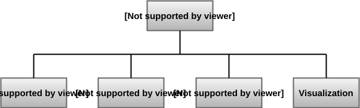

Environments
On this page, all environments with their environment-id are listed. In general, all environment-ids are structured as follows:
ControlType-ControlTask-MotorType-v0
The
ControlTypeis in{Finite / Cont}for finite control set and continuous control set action spacesThe
ControlTaskis in{TC / SC / CC}(Torque / Speed / Current Control)The
MotorTypeis in{PermExDc / ExtExDc / SeriesDc / ShuntDc / PMSM / SynRM / / EESM / DFIM / SCIM / SIXPMSM }
Environment |
environment-id |
|---|---|
Permanently Excited DC Motor Environments |
|
Finite Torque Control Permanently Excited DC Motor Environment |
|
Continuous Torque Control Permanently Excited DC Motor Environment |
|
Finite Speed Control Permanently Excited DC Motor Environment |
|
Continuous Speed Control Permanently Excited DC Motor Environment |
|
Finite Current Control Permanently Excited DC Motor Environment |
|
Continuous Current Control Permanently Excited DC Motor Environment |
|
Externally Excited DC Motor Environments |
|
Finite Torque Control Externally Excited DC Motor Environment |
|
Continuous Torque Control Externally Excited DC Motor Environment |
|
Finite Speed Control Externally Excited DC Motor Environment |
|
Continuous Speed Control Externally Excited DC Motor Environment |
|
Finite Current Control Externally Excited DC Motor Environment |
|
Continuous Current Control Externally Excited DC Motor Environment |
|
Series DC Motor Environments |
|
Finite Torque Control Series DC Motor Environment |
|
Continuous Torque Control Series DC Motor Environment |
|
Finite Speed Control Series DC Motor Environment |
|
Continuous Speed Control Series DC Motor Environment |
|
Finite Current Control Series DC Motor Environment |
|
Continuous Current Control Series DC Motor Environment |
|
Shunt DC Motor Environments |
|
Finite Torque Control Shunt DC Motor Environment |
|
Continuous Torque Control Shunt DC Motor Environment |
|
Finite Speed Control Shunt DC Motor Environment |
|
Continuous Speed Control Shunt DC Motor Environment |
|
Finite Current Control Shunt DC Motor Environment |
|
Continuous Current Control Shunt DC Motor Environment |
|
Permanent Magnet Synchronous Motor (PMSM) Environments |
|
Finite Torque Control PMSM Environment |
|
Continuous Torque Control PMSM Environment |
|
Finite Speed Control PMSM Environment |
|
Continuous Speed Control PMSM Environment |
|
Finite Current Control PMSM Environment |
|
Continuous Current Control PMSM Environment |
|
Externally Excited Synchronous Motor (EESM) Environments |
|
Finite Torque Control EESM Environment |
|
ContinuousTorque Control EESM Environment |
|
Finite Speed Control EESM Environment |
|
Continuous Speed Control EESM Environment |
|
Finite Current Control EESM Environment |
|
Continuous Current Control EESM Environment |
|
Synchronous Reluctance Motor (SynRM) Environments |
|
Finite Torque Control SynRM Environment |
|
Continuous Torque Control SynRM Environment |
|
Finite Speed Control SynRM Environment |
|
Continuous Speed Control SynRM Environment |
|
Finite Current Control SynRM Environment |
|
Continuous Current Control SynRM Environment |
|
Squirrel Cage Induction Motor (SCIM) Environments |
|
Finite Torque Control SCIM Environment |
|
Continuous Torque Control SCIM Environment |
|
Finite Speed Control SCIM Environment |
|
Continuous Speed Control SCIM Environment |
|
Finite Current Control SCIM Environment |
|
Continuous Current Control SCIM Environment |
|
Doubly Fed Induction Motor (DFIM) Environments |
|
Finite Torque Control DFIM Environment |
|
Continuous Torque Control DFIM Environment |
|
Finite Speed Control DFIM Environment |
|
Continuous Speed Control DFIM Environment |
|
Finite Current Control DFIM Environment |
|
Continuous Current Control DFIM Environment |
|
Six Phase PMSM (SIXPMSM) Environments |
|
Finite Torque Control SIXPMSM Environment |
|
Continuous Torque Control SIXPMSM Environment |
|
Finite Speed Control SIXPMSM Environment |
|
Continuous Speed Control SIXPMSM Environment |
|
Finite Current Control SIXPMSM Environment |
|
Continuous Current Control SIXPMSM Environment |
|
Motor Environments:
- Permanently Excited DC Motor Environments
- Continuous Current Control DC Permanently Excited Motor Environment
- Continuous Speed Control DC Permanently Excited Motor Environment
- Continuous Torque Control DC Permanently Excited Motor Environment
- Finite Control Set Current Control DC Permanently Excited Motor Environment
- Finite Control Set Speed Control DC Permanently Excited Motor Environment
- Finite Control Set Torque Control DC Permanently Excited Motor Environment
- Externally Excited DC Motor Environments
- Continuous Current Control DC Externally Excited Motor Environment
- Continuous Speed Control DC Externally Excited Motor Environment
- Continuous Torque Control DC Externally Excited Motor Environment
- Finite Control Set Current Control DC Externally Excited Motor Environment
- Finite Control Set Speed Control DC Externally Excited Motor Environment
- Finite Control Set Torque Control DC Externally Excited Motor Environment
- Series DC Motor Environments
- Continuous Current Control Series DC Motor Environment
- Continuous Speed Control Series DC Motor Environment
- Continuous Torque Control Series DC Motor Environment
- Finite Control Set Current Control Series DC Motor Environment
- Finite Control Set Speed Control Series DC Motor Environment
- Finite Control Set Torque Control Series DC Motor Environment
- Shunt DC Motor Environments
- Continuous Current Control Shunt DC Motor Environment
- Continuous Speed Control Shunt DC Motor Environment
- Continuous Torque Control Shunt DC Motor Environment
- Finite Control Set Current Control Shunt DC Motor Environment
- Finite Control Set Speed Control Shunt DC Motor Environment
- Finite Control Set Torque Control Shunt DC Motor Environment
- Permanent Magnet Synchronous Motor Environments
- Current Control Permanent Magnet Synchronous Motor Environment
- Speed Control Permanent Magnet Synchronous Motor Environment
- Torque Control Permanent Magnet Synchronous Motor Environment
- Finite Control Set Current Control Permanent Magnet Synchronous Motor Environment
- Finite Control Set Speed Control Permanent Magnet Synchronous Motor Environment
- Finite Control Set Torque Control Permanent Magnet Synchronous Motor Environment
- Externally Excited Synchronous Motor Environments
- Continuous Control Set Current Control Externally Excited Synchronous Motor Environment
- Continuous Control Set Speed Control Externally Excited Synchronous Motor Environment
- Continuous Control Set Torque Control Externally Excited Synchronous Motor Environment
- Finite Control Set Current Control Externally Excited Synchronous Motor Environment
- Finite Control Set Speed Control Externally Excited Synchronous Motor Environment
- Finite Control Set Torque Control Externally Excited Synchronous Motor Environment
- Synchronous Reluctance Motor Environments
- Abc-Continuous Current Control Synchronous Reluctance Motor Environment
- Abc-Continuous Speed Control Synchronous Reluctance Motor Environment
- Abc-Continuous Torque Control Synchronous Reluctance Motor Environment
- Dq-Continuous Current Control Synchronous Reluctance Motor Environment
- Dq-Continuous Speed Control Synchronous Reluctance Motor Environment
- Dq-Continuous Torque Control Synchronous Reluctance Motor Environment
- Finite Control Set Current Control Synchronous Reluctance Motor Environment
- Finite Control Set Speed Control Synchronous Reluctance Motor Environment
- Finite Control Set Torque Control Synchronous Reluctance Motor Environment
- Squirrel Cage Induction Motor Environments
- Abc-Continuous Current Control Squirrel Cage Induction Motor Environment
- Abc-Continuous Speed Control Squirrel Cage Induction Motor Environment
- Abc-Continuous Torque Control Squirrel Cage Induction Motor Environment
- Dq-Continuous Current Control Squirrel Cage Induction Motor Environment
- Dq-Continuous Speed Control Squirrel Cage Induction Motor Environment
- Dq-Continuous Torque Control Squirrel Cage Induction Motor Environment
- Finite Control Set Current Control Squirrel Cage Induction Motor Environment
- Finite Control Set Speed Control Squirrel Cage Induction Motor Environment
- Finite Control Set Torque Control Squirrel Cage Induction Motor Environment
- Doubly Fed Induction Motor Environments
- Abc-Continuous Current Control Doubly Fed Induction Motor Environment
- Abc-Continuous Speed Control Doubly Fed Induction Motor Environment
- Abc-Continuous Torque Control Doubly Fed Induction Motor Environment
- Dq-Continuous Current Control Doubly Fed Induction Motor Environment
- Dq-Continuous Speed Control Doubly Fed Induction Motor Environment
- Dq-Continuous Torque Control Doubly Fed Induction Motor Environment
- Finite Control Set Current Control Doubly Fed Induction Motor Environment
- Finite Control Set Speed Control Doubly Fed Induction Motor Environment
- Finite Control Set Torque Control Doubly Fed Induction Motor Environment
- Six Phase Permanent Magnet Synchronous Motor Environments
- Current Control Six Phase Permanent Magnet Synchronous Motor Environment
- Speed Control Six Phase Permanent Magnet Synchronous Motor Environment
- Torque Control Six Phase Permanent Magnet Synchronous Motor Environment
- Finite Control Set Current Control Six Phase Permanent Magnet Synchronous Motor Environment
- Finite Control Set Speed Control Six Phase Permanent Magnet Synchronous Motor Environment
- Finite Control Set Torque Control Six Phase Permanent Magnet Synchronous Motor Environment
Electric Motor Base Environment
- class gym_electric_motor.core.ElectricMotorEnvironment(physical_system, reference_generator, reward_function, visualization=(), state_filter=None, callbacks=(), constraints=(), physical_system_wrappers=(), scale_plots=False, **kwargs)[source]
Bases:
EnvAPI for
gym_electric_motor.core.ElectricMotorEnvironment.Note
The original docstring is temporarily suppressed due to formatting issues upstream. Once it’s cleaned, we’ll restore the full text here.
API for
gym_electric_motor.core.ElectricMotorEnvironment.Note
The original docstring is temporarily suppressed due to formatting issues upstream. Once it’s cleaned, we’ll restore the full text here.
- reset(seed=None, options=None, *_, **__)[source]
Reset of the environment and all its modules to an initial state.
- Returns:
The initial observation consisting of the initial state and initial reference. info(dict): Auxiliary information (optional)
- set_wrapper_attr(name: str, value: Any, *, force: bool = True) bool
Sets the attribute name on the environment with value, see Wrapper.set_wrapper_attr for more info.
- step(action)[source]
Perform one simulation step of the environment with an action of the action space.
- Parameters:
action – Action to play on the environment.
- Returns:
Tuple of the new state and the next reference. reward(float): Amount of reward received for the last step. terminated(bool): Flag, indicating if a reset is required before new steps can be taken. info(dict): Auxiliary information (optional)
- Return type:
- action_space: spaces.Space[ActType]
- property constraint_monitor
The ConstraintMonitor of the environment.
- Type:
Returns(ConstraintMonitor)
- current_next_reference = None
- current_reference = None
- current_state = None
- env_id = None
- property limits
Returns a list of limits of all states in the observation (called in state_filter) in the same order
- property nominal_state
Returns a list of nominal values of all states in the observation (called in state_filter) in that order
- property np_random: Generator
Returns the environment’s internal
_np_randomthat if not set will initialise with a random seed.- Returns:
Instances of np.random.Generator
- property np_random_seed: int
Returns the environment’s internal
_np_random_seedthat if not set will first initialise with a random int as seed.If
np_random_seedwas set directly instead of throughreset()orset_np_random_through_seed(), the seed will take the value -1.- Returns:
the seed of the current np_random or -1, if the seed of the rng is unknown
- Return type:
- observation_space: spaces.Space[ObsType]
- property physical_system
Returns: PhysicalSystem: The Physical System of the Environment
- property reference_generator
Returns: ReferenceGenerator: The ReferenceGenerator of the Environment
- property reference_names
Returns a list of state names of all states in the observation (called in state_filter) in the same order
- property reward_function
Returns: RewardFunction: The RewardFunction of the environment
- sim = SimulationEnvironment(tau=0.0, step=0)
- property state_names
Returns a list of state names of all states in the observation (called in state_filter) in the same order
- property unwrapped: Env[ObsType, ActType]
Returns the base non-wrapped environment.
- Returns:
The base non-wrapped
gymnasium.Envinstance- Return type:
Env
- property visualizations
Returns a list of all active motor visualizations.
- workspace = Workspace()
